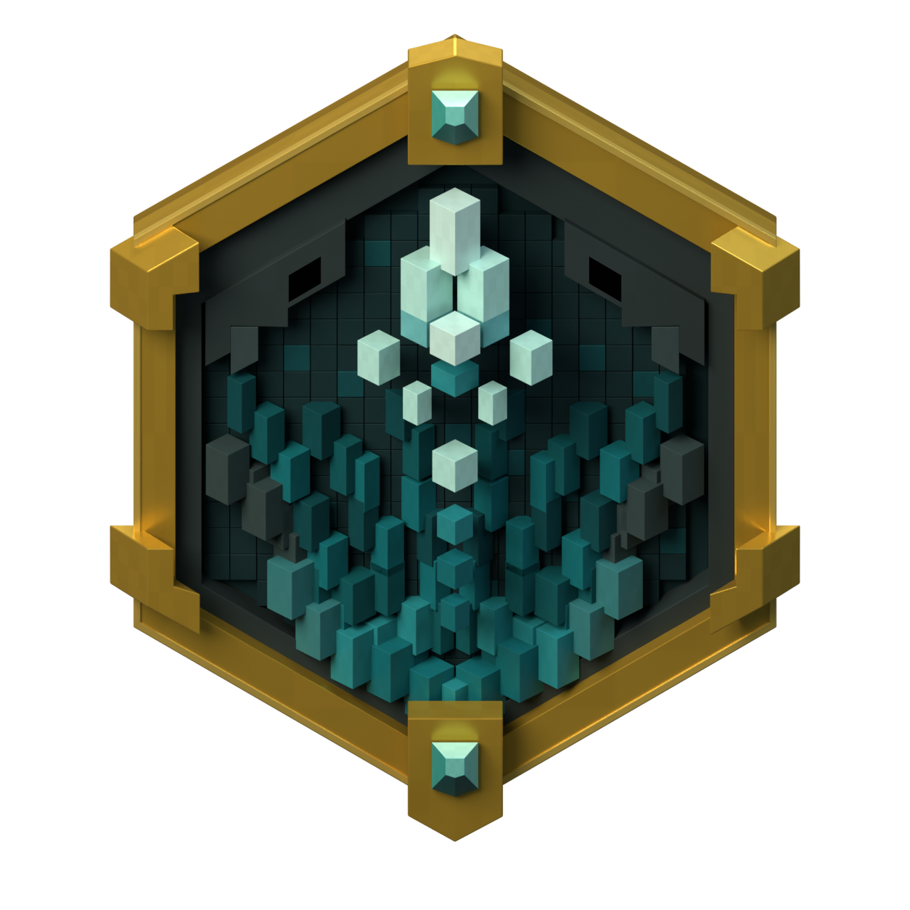

Comparison of the supplied concept, the previous draft and the current physical Blender model. Stone joints, shorter ledges, gold socket braces and lower corner flanges were refined. The cavern still differs in density and depth, and the materials remain under review.

Raw front silhouette intersection-over-union: r5: 92.86%, r9: 95.80%. This measures only the outer shape; it is not a fidelity score for the asset.
Current Unreal front view · Current Unreal side view · Inferred Blender rear